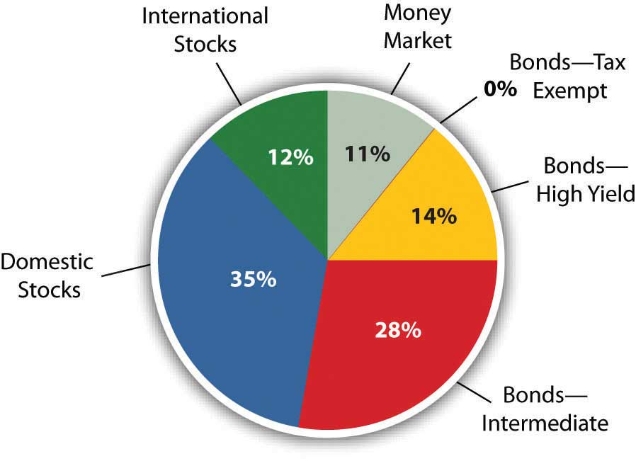

Every investor wants to maximize return, the earnings or gains from giving up surplus cash. And every investor wants to minimize risk, because it is costly. To invest is to assume risk, and you assume risk expecting to be compensated through return. The more risk assumed, the more the promised return. So, to increase return you must increase risk. To lessen risk, you must expect less return, but another way to lessen risk is to diversify—to spread out your investments among a number of different asset classes. Investing in different asset classes reduces your exposure to economic, asset class, and market risks.
Concentrating investment concentrates risk. Diversifying investments spreads risk by having more than one kind of investment and thus more than one kind of risk. To truly diversify, you need to invest in assets that are not vulnerable to one or more kinds of risk. For example, you may want to diversify
To diversify well, you have to look at your collection of investments as a whole—as a portfolio—rather than as a gathering of separate investments. If you choose the investments well, if they are truly different from each other, the whole can actually be more valuable than the sum of its parts.
In traditional portfolio theory, there are three levels or steps to diversifying: capital allocation, asset allocation, and security selection.
Capital allocationA strategy of diversifying a portfolio between risky and riskless assets. is diversifying your capital between risky and riskless investments. A “riskless” asset is the short-term (less than ninety-day) U.S. Treasury bill. Because it has such a short time to maturity, it won’t be much affected by interest rate changes, and it is probably impossible for the U.S. government to become insolvent—go bankrupt—and have to default on its debt within such a short time.
The capital allocation decision is the first diversification decision. It determines the portfolio’s overall exposure to risk, or the proportion of the portfolio that is invested in risky assets. That, in turn, will determine the portfolio’s level of return.
The second diversification decision is asset allocationThe strategy of achieving portfolio diversification by investing in different asset classes., deciding which asset classes, and therefore which risks and which markets, to invest in. Asset allocations are specified in terms of the percentage of the portfolio’s total value that will be invested in each asset class. To maintain the desired allocation, the percentages are adjusted periodically as asset values change. Figure 12.11 "Proposed Asset Allocation" shows an asset allocation for an investor’s portfolio.
Figure 12.11 Proposed Asset Allocation
Asset allocation is based on the expected returns and relative risk of each asset class and how it will contribute to the return and risk of the portfolio as a whole. If the asset classes you choose are truly diverse, then the portfolio’s risk can be lower than the sum of the assets’ risks.
One example of an asset allocation strategy is life cycle investingAn investment strategy in which asset allocation is based on the investor’s age or stage of life.—changing your asset allocation as you age. When you retire, for example, and forgo income from working, you become dependent on income from your investments. As you approach retirement age, therefore, you typically shift your asset allocation to less risky asset classes to protect the value of your investments.
Security selectionThe process of choosing individual securities to be included in the portfolio. is the third step in diversification, choosing individual investments within each asset class. Here is the chance to achieve industry or sector and company diversification. For example, if you decided to include corporate stock in your portfolio (asset allocation), you decide which corporation’s stock to invest in. Choosing corporations in different industries, or companies of different sizes or ages, will diversify your stock holdings. You will have less risk than if you invested in just one corporation’s stock. Diversification is not defined by the number of investments but by their different characteristics and performance.
Capital allocation decides the amount of overall risk in the portfolio; asset allocation tries to maximize the return you can get for that amount of risk. Security selection further diversifies within each asset class. Figure 12.12 "Levels of Diversification" demonstrates the three levels of diversification.
Figure 12.12 Levels of Diversification

Just as life cycle investing is a strategy for asset allocation, investing in index funds is a strategy for security selection. Indexes are a way of measuring the performance of an entire asset class by measuring returns for a portfolio containing all the investments in that asset class. Essentially, the index becomes a benchmarkA standard, often an index of securities, representing an industry or asset class and used as an indicator of growth potential or as a basis of comparison for similar of disparate industries or assets. for the asset class, a standard against which any specific investment in that asset class can be measured. An index fund is an investment that holds the same securities as the index, so it provides a way for you to invest in an entire asset class without having to select particular securities. For example, if you invest in the S&P 500 Index fund, you are investing in the five hundred largest corporations in the United States—the asset class of large corporations.
There are indexes and index funds for most asset classes. By investing in an index, you are achieving the most diversification possible for that asset class without having to make individual investments, that is, without having to make any security selection decisions. This strategy of bypassing the security selection decision is called passive managementAn investment strategy that does not include security selection within an asset class; the investment is expected to perform as well as the benchmark index.. It also has the advantage of saving transaction costs (broker’s fees) because you can invest in the entire index through only one transaction rather than the many transactions that picking investments would require.
In contrast, making security selection decisions to maximize returns and minimize risks is called active managementAn investment strategy that includes security selection within an asset class in order to outperform the asset class benchmark.. Investors who favor active management feel that the advantages of picking specific investments, after careful research and analysis, are worth the added transaction costs. Actively managed portfolios may achieve diversification based on the quality, rather than the quantity, of securities selected.
Also, asset allocation can be actively managed through the strategy of market timingThe practice of basing investment strategy on predictions of future market changes or on asset return forecasts.—shifting the asset allocation in anticipation of economic shifts or market volatility. For example, if you forecast a period of higher inflation, you would reduce allocation in fixed-rate bonds or debt instruments, because inflation erodes the value of the fixed repayments. Until the inflation passes, you would shift your allocation so that more of your portfolio is in stocks, say, and less in bonds.
It is rare, however, for active investors or investment managers to achieve superior results over time. More commonly, an investment manager is unable to achieve consistently better returns within an asset class than the returns of the passively managed index.Much research, some of it quite academic, has been done on this subject. For a succinct (and instructive) summary of the discussion, see Burton G. Malkiel, A Random Walk Down Wall Street, 10th ed. (New York: W. W. Norton & Company, Inc., 2007).
A portfolio strategy involves